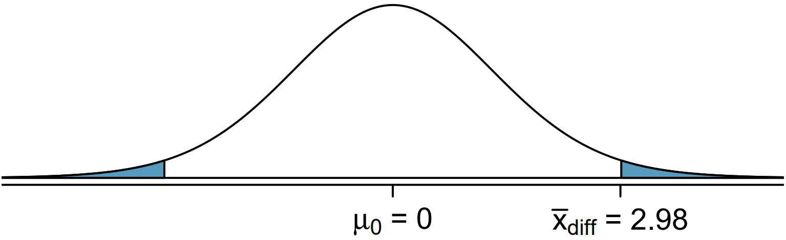

4.2 Hypothesis Testing for mean \(\mu\)
4.2.1 Objectives
By the end of this unit, students will be able to:
- Formulate claims about a population mean in the form of a null hypothesis and alternative hypothesis.
- Conduct t-tests for testing claims about a single population mean based on one sample and paired samples.
4.2.2 Overview
One sample t-test (Same framework as the Hypothesis Testing for proportion)
Steps:
Set up the hypotheses
Compute the t test statistic
Using sample with size \(n\), sample mean \(\bar{x}\), sample standard deviation \(s\), null value \(\mu_0\),
\(T = \frac{\bar{x} - \mu_0}{s/\sqrt{n}}\)
Compute the p-value
Let t-test statistic \(t_1 = \frac{\bar{x} - \mu_0}{s/\sqrt{n}}\) (from step 2)
For left-sided test, p-value is \(P(T < t_1)\) use
pt(t, df)For right-sided test, p-value is \(P(T > t_1)\) use
pt(t, df, lower.tail = FALSE)For two-sided test, p-value is \(P(|T| > |t_1|)\) use \(2*pt(-|t_1|, df)\) or \(2*pt(|t_1|, df, lower.tail = FALSE)\)
Compare the p-value with the significance level \(\alpha\) and make decision
If p-value \(\leq \alpha\), then we have enough evidence to reject \(H_0\) and substantiate \(H_a\);
If p-value > \(\alpha\), then we do not have enough evidence to reject \(H_0\)
The default value of significance level is \(\alpha = 0.05\)
Hypothesis testing for a single mean
Once you have determined a one-mean hypothesis test is the correct procedure, there are four steps to completing the test:
Prepare. Identify the parameter of interest, list out hypotheses, identify the significance level, and identify \(\bar x,s\) and \(n\).
Check. Verify conditions to ensure \(\bar x\) is nearly normal.
Calculate. If the conditions hold, compute \(SE\), compute the T-score, and identify the p-value.
Conclude. Evaluate the hypothesis test by comparing the p-value to \(\alpha\), and provide a conclusion in the context of the problem/.
Paired Data
In an earlier edition of this text book, we found that Amazon prices were, on average, lower than those of the UCLA Bookstore for UCLA courses in 2010. It’s been several years, and many stores have adapted to the online market, so we wondered, how is the UCLA Bookstore doing today?
We sampled 201 UCLA courses. Of those, 68 required books could be found on Amazon. A portion of the data set from these courses is shown in the table below, where the prices are in US dollars.
| subject | course_number | bookstore | amazon | price_difference | |
|---|---|---|---|---|---|
| 1 | American Indian Studies | M10 | 47.97 | 47.45 | 0.52 |
| 2 | Anthropology | 2 | 14.26 | 13.55 | 0.71 |
| 3 | Arts and Architecture | 10 | 13.50 | 12.53 | 0.97 |
| \(\vdots\) | \(\vdots\) | \(\vdots\) | \(\vdots\) | \(\vdots\) | \(\vdots\) |
| 68 | Jewish studies | M10 | 35.96 | 32.40 | 3.56 |
Paired observations:
Each textbook has two corresponding prices in the data set: one for the UCLA Bookstore and one for Amazon. When two sets of observations have this special correspondence, they are said to be paired.
Paired data
Two sets of observations are paired if each observation in one set has a special correspondence or connection with exactly one observation in the other data set.
To analyze paired data, it is often useful to look at the difference in outcomes of each pair of observations. In the textbook data, we look at the differences in prices, which is represented as the price_difference variable in the data set. Here the differences are taken as
\[ \text{UCLA Bookstore price} - \text{Amazon price} \]
It is important that we always subtract using a consistent order; here Amazon prices are always subtracted from UCLA prices. The first difference shown in the table above is computed as \(47.97 - 47.45 = 0.52\). Similarly, the second difference is computed as \(14.26 - 13.55 = 0.71\), and the third is \(13.50 - 12.53 = 0.97\). A histogram of the differences is shown in the figure below. Using differences between paired observations is a common and useful way to analyze paired data.

Inference for paired data
To analyze a paired data set, we simply analyze the differences.
\[n_{diff} = 68~~~~~\bar{x}_{diff} = 3.58~~~~~s_{diff} = 13.42 \]
Lets set up a hypothesis test to determine whether, on average, there is a difference between Amazon’s price for a book and the UCLA bookstore’s price. Also, check the conditions for whether we can move forward with the test using the \(t\)-distribution.
We are considering two scenarios: there is no difference or there is some difference in average prices.
\[H_0: \mu_{diff} = 0. \text{ There is no difference in the average textbook price.}\]
\[H_A: \mu_{diff} \ne 0. \text{ There is a difference in average prices.}\]
Next, we will check the independence and normality conditions.
The observations are based on a simple random sample, so independence is reasonable. While there are some outliers, \(n = 68\) and none of the outliers are particularly extreme, so the normality of \(\bar x\) is satisfied. With these conditions satisfied, we can move forward with the \(t\)-distribution.
To compute the test, we need to compute the standard error associated with \(\bar{x}_{diff}\) using the standard deviation of the differences (\(s_{diff} = 13.42\)) and the number of differences (\(n_{diff} = 68\)):
\[SE_{\bar{x}_{diff}} = \frac{s_{diff}}{\sqrt{n_{diff}}} = \frac{13.42}{\sqrt{68}} = 1.63\]
The test statistics is the T-score of \(\bar{x}_{diff}\) under the null condition that the actual mean difference is 0:
\[T = \frac{\bar{x}_{diff} - 0}{SE_{\bar{x}_{diff}}} = \frac{3.58 - 0}{1.63} = 2.20\]
To visualize the p-value, the sampling distribution of \(\bar{x}_{diff}\) is drawn as though \(H_0\) is true, and the p-value is represented by the two shaded tails:

The degrees of freedom is \(df = 68 -1 = 67\). Using R, we find the one-tail area of 0.0156. Doubling this area gives the p-value: 0.0312.
## [1] 0.03125996Because the p-value is less than 0.05, we reject the null hypothesis. Amazon prices are, on average, lower than the UCLA Bookstore prices for UCLA courses.
4.2.4 Exercises
Exercise 1
Without finding the values, arrange the numbers from small to large:
- \(P(Z < -1.25)\)
- \(P(T < -1.25)\) with \(df=10\)
- \(P(T < -1.25)\) with \(df=15\)
- \(P(Z > 1.35)\)
- \(P(T > 1.35)\) with \(df=10\)
- \(P(T > 1.25)\) with \(df=15\)
\[ \_\_\_\_\_\_ < \_\_\_\_\_\_ < \_\_\_\_\_\_ < \_\_\_\_\_\_ < \_\_\_\_\_\_ < \_\_\_\_\_\_ \]
Exercise 2
Use R calculator to find the values of the probability of t-distribution. Sketch the t-curve and shaded region.
- \(P(T < -1.25)\) with \(df=10\)
- \(P(T < -1.25)\) with \(df=15\)
- \(P(T > 1.35)\) with \(df=10\)
- \(P(T > 1.25)\) with \(df=15\)
Exercise 3
Use R calculator to find the critical t-value \((t_{\alpha/2})\), rounded the result to 4 decimal places.
- CL = 90%, \(n = 7\)
- CL = 98%, \(n = 20\)
- CL = 99%, \(n = 28\)
- CL = 95%, \(n = 9\)
Exercise 4
Find confidence interval with the sample information:
(a) \(n=5, \bar{x}=4.1, s=1.2\), 90% confidence level
(b) \(n=15, \bar{x}=4.1, s=1.2\), 90% confidence level
(c) \(n=5, \bar{x}=4.1, s=1.2\), 98% confidence level
(d) \(n=15, \bar{x}=4.1, s=1.2\), 98% confidence level
Exercise 5
What affects the width of the confidence interval? (You may use your observations from Exercise 4 for reference)
Exercise 6
(Working backwards) A 95% confidence interval for a population mean \(\mu\) is given as (18.98, 20.02). This confidence interval is based on a simple random sample of 36 observations. Calculate the following:
(a) The sample mean
(b) The margin of error
(c) The critical t-value (use t-distribution)
(d) The standard error (use the result of c)
(e) The sample standard deviation (use the result of d)
Exercise 7
Find the P-value for the given sample sizes and test statistic:
(a) \(n=26\), \(T=2.485\), for right-sided test
(b) \(n=18\), \(T=-1.45\), for left-sided test
(c) \(n=26\), \(T=2.485\), for two-sided test
(d) \(n=18\), \(T=-1.45\), for two-sided test
Exercise 8
A random sample of 25 New Yorkers were asked how much sleep they get per night. The result shows:
\(n=25, \bar{x}=7.73, s=0.77\)
The point estimate suggests that New Yorkers sleep less than 8 hours per night on average. Is the result statistically significant?
Follow the steps to conduct the hypothesis test.
(a) Write the hypotheses in symbols: \(H_0\): ____________ \(H_a\): ____________
(b) Calculate the test statistic
(c) Compute the P-value and draw a picture
(d) What is the conclusion of the hypothesis test, using the significance level \(\alpha=0.05\)
(e) If you were to construct a 90% confidence interval that corresponds to this hypothesis test, would you expect 8 hours a night on average to be in the interval?
Exercise 9
Georgianna claims that in a small city, the average child takes less than 5 years of piano lessons. We have a random sample of 20 children from the city, with a mean of 4.6 years of piano lessons and a standard deviation of 2.2 years. Evaluate Georgianna’s claim using a hypothesis test.
(a) Write the hypotheses in symbols: \(H_0\): ____________ \(H_a\): ____________
(b) Calculate the test statistic
(c) Compute the P-value and draw a picture
(d) What is the conclusion of the hypothesis test, using the significance level \(\alpha=0.05\)